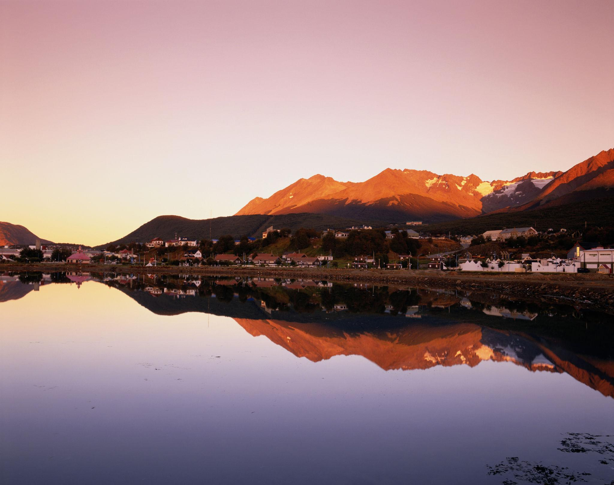
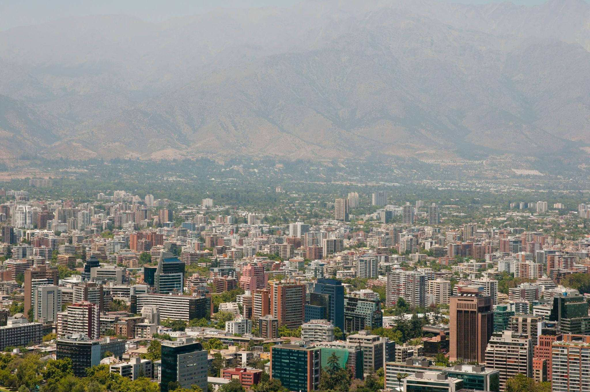

Historia
O Chile foi colonizado pela Espanha no século XVI e conquistou sua independência em 1818. O país passou por períodos políticos marcantes, incluindo a ditadura de Augusto Pinochet entre 1973 e 1990.
Lugares para visitar
- Deserto do Atacama → Um dos desertos mais secos do mundo, com paisagens surreais.

- Patagônia → Natureza incrível com montanhas, geleiras e trilhas.

- Santiago Capital moderna com cultura, gastronomia e vista dos Andes.
